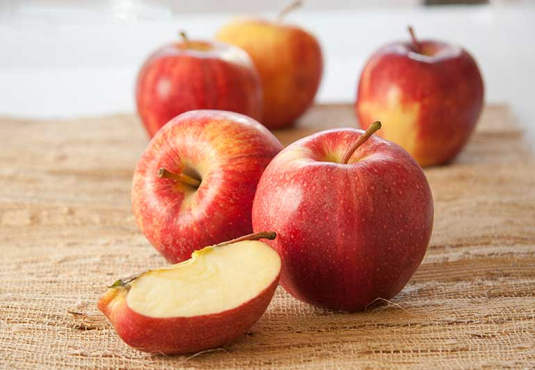
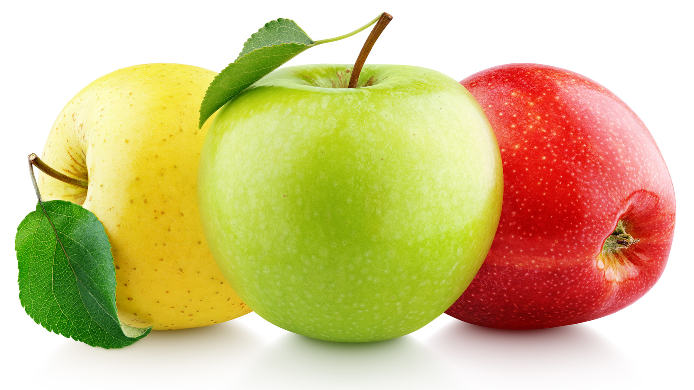

This nutritious fruit offers multiple health benefits. Apples may lower your chance of developing cancer, diabetes, and heart disease. Research says apples may also help you lose weight while improving your gut and brain health. Apples are the most widely consumed fruit globally.
What are the 5 benefits of apples?
1. Nutritious Apples are considered nutrient-dense fruits, meaning they provide a lot of nutrients per serving. The current Dietary Guidelines for AmericansTrusted Source recommend 2 cups of fruit daily for a 2,000-calorie diet, emphasizing whole fruits like apples. One medium 7-ounce (oz) or 200 grams (g) apple offers the following nutrients: Calories: 104 Carbs: 28 g Fiber: 5 g Vitamin C: 10% of the Daily Value (DV) Copper: 6% of the DV Potassium: 5% of the DV Vitamin K: 4% of the DV The same serving also provides 2–5%Trusted Source of the DV for vitamins E, B1, and B6. Apples are also a rich source of polyphenols, an important group of antioxidants. While nutrition labels don’t list these plant compounds, they’re likely responsibleTrusted Source for many of apples’ health benefits. To get the most out of apples, leave the skin on, as it contains half of the fiber and most of the polyphenols.
2. May support weight loss Apples are high in fiber and water, which makes them filling. In one studyTrusted Source, eating whole apples increased fullness more than consuming equal amounts of apple juice. This may happen because whole apples reduce gastric emptying — the rate at which your stomach empties. ResearchTrusted Source also suggests apple intake may significantly reduce Body Mass Index (BMI), a weight-related risk factor for heart disease. Interestingly, apple polyphenols may also haveTrusted Source anti-obesity effects.
3. Could be good for your heart Apples have been linked to a lower chance of heart disease. Research has found that eating 100-150 g/d of whole apples is associated with a lower chanceTrusted Source of heart disease and risk factors such as high blood pressure. One reason may be that they contain soluble fiber. This fiber is also associatedTrusted Source with a lower chance of heart disease. Another reason may be that they offer polyphenols. Some of these may help lowerTrusted Source blood pressure. StudiesTrusted Source have also linked high intakes of flavonoids with a lower chance of stroke. Another study has also linked eating apples to a reduced chanceTrusted Source of stroke.
4. May promote gut health Apples contain pectin, a type of fiber that acts as a prebiotic in your gut microbiome, and a healthy gut is often keyTrusted Source to better health. Since dietary fiber cannot be digested, pectin reaches your colon intact, promoting the growth of good bacteria. It especially improves the ratio of Bacteriodetes to Firmicutes, the two main types of bacteria in your gut. New research suggests that, by beneficially altering your gut microbiota, apples may help protectTrusted Source against chronic diseases like obesity, type 2 diabetes, heart disease, and cancer.
5. May help protect your brain Quercetin in apples may protectTrusted Source your brain from damage caused by oxidative stress. A meta-analysis of 14 animal studiesTrusted Source suggests quercetin may have some preventive properties against Alzheimer’s disease (AD). Still, the researchers questioned some of the study methodologies and believed more research is needed to conclude. Remember that most research focuses on a specific compound instead of whole apples. Therefore, further research is still needed, specifically on the effects of apples, before any conclusions can be drawn. SUMMARY
What Is an Apples
An apples is a crunchy, bright-colored fruit, which is one of the most popular in the U.S. You've probably heard the age-old saying, "An apple a day keeps the doctor away." Although eating them isn't a cure-all, it is good for your health. European settlers brought apples with them to the Americas. They preferred apples to North America's native crab apple, a smaller, tarter fruit. Today, many types of apples are grown in the U.S., but a small percentage of the ones you can buy in grocery stores are imported. Each type has a different shape, color, and texture. An apple can be sweet or sour, and its flavor can vary depending on what type you're eating.
In the United States, as well as in most industrialized countries, cardiovascular disease and cancer are ranked as the top two leading causes of death. The causes of both diseases have been linked to lifestyle choices, and one of the most important is diet. It has been estimated that a healthy diet could prevent approximately 30% of all cancers [1,2]. High cholesterol and obesity are greatly influenced by diet and lifestyle and are costing the United States billions of dollars in health related expenses. High cholesterol, a risk factor for cardiovascular disease, is commonly treated with statin drugs, and it has been estimated that the United States will spend 30 billion dollars per year on cholesterol treatment by statin drugs [3]. In 1998, obesity, a risk factor for cardiovascular disease, cancer, and diabetes, has been estimated to cost the United States over 92 billion dollars per year [4]. Understanding the effects of diet on chronic disease may greatly aid in the prevention of chronic disease. As children, many of us were told to "eat your vegetables because they are good for you", and the adage "an apple a day keeps the doctor away" is still quite popular. Recently, many studies have provided the scientific backing for both of these very common phrases. In the early 1990's, researchers examined well over one hundred epidemiological studies relating to diet and cancer, and in 128 of 156 dietary studies, fruits and vegetables had a significant protective effect against a variety of different cancers [5]. They found that those who consumed low amounts of fruits and vegetables were twice as likely to have cancer compared to those who ate high amounts of fruits and vegetables. Recently, a study linked intake of fruits and vegetables with a reduced risk in breast cancer in woman in China [6]. In this population based, case-control study of women in Shanghai, pre-menopausal women who ate more dark yellow-orange vegetables and more citrus fruits tended to have lower breast cancer risk. Fruit and vegetable intake also appears to have a protective effect against coronary heart disease [7]. Approximately 84,000 women were followed for 14 years and 42,000 men were followed for 8 years. They found that people who ate the highest amount of fruits and vegetables had a 20% lower risk for coronary heart disease, and the lowest risks were seen in people who consumed more green leafy vegetables, and fruits rich in vitamin C. Not only may a diet high in fruits and vegetables help prevent heart disease and cancer, but it may also help protect against a variety of other illnesses. For example, a diet high in fruits and vegetables may help protect against cataracts, diabetes, Alzheimer disease, and even asthma [8-10]. Much of the protective effect of fruits and vegetables has been attributed to phytochemicals, which are the non-nutrient plant compounds such as the carotenoids, flavonoids, isoflavonoids, and phenolic acids. Thousands of phytochemicals have been identified in foods, yet there are still many that have not been identified. Different phytochemicals have been found to possess a range of activities, which may help in protecting against chronic disease. For example, phytochemicals may inhibit cancer cell proliferation, regulate inflammatory and immune response, and protect against lipid oxidation [11,12]. A major role of the phytochemicals is protection against oxidation. We live in a highly oxidative environment, and many processes involved in metabolism may result in the production of more oxidants. Humans, and all animals, have complex antioxidant defense systems, but they are not perfect and oxidative damage will occur. Both cardiovascular disease and cancer are thought to be particularly the results of oxidative stress, which can lead to damage of the larger biomolecules, such as DNA, lipids, and proteins. It has been estimated that there are 10,000 oxidative hits to DNA per cell per day in humans [10]
How to Buy and Prepare Apples When you're buying apples fruit, make sure they feel firm and heavy. The skin shouldn't have bruises, cuts, or soft spots. Apples are healthiest when eaten fresh and unpeeled. Cut apples turn brown quickly because of a process called enzymatic browning. The darkened fruit isn't harmful, but it may look less appealing. To prevent enzymatic browning, dip the apples in a lemon juice solution or use a commercial product. Make sure to store apples in your refrigerator to keep them fresh longer. They can be stored at room temperature, but they'll ripen much faster.
Apple Health Benefits Apples can do a lot for you, thanks to plant chemicals called flavonoids. And they have pectin, a fiber that breaks down in your gut. If you take off the apple's skin before eating it, you won't get as much of the fiber or flavonoids. Phytochemicals Nutritionists and other scientists get excited about apples because of their phytochemical content. Phytochemicals are substances found in plants that may be good for human health. They go by many different names, such as phytonutrients, polyphenols, antioxidants, phytochemicals, and flavonoids. You shouldn't peel your apples, as most of the phytochemicals are in the skin.